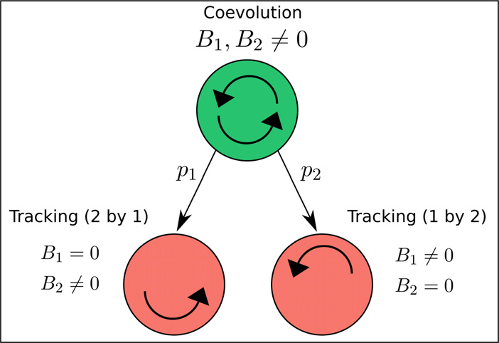
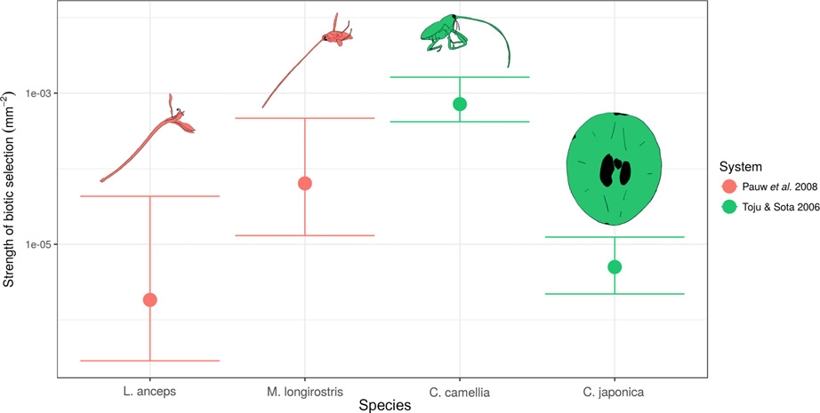

Ecology Letters, (2019)
doi: 10.1111/ele.13231
L E T T E R
The measurement of coevolution in the wild
Abstract
BobWeek* and Scott L.Nuismer
Coevolution has long been thought to drive the exaggeration of traits, promote major evolution-
ary transitions such as the evolution of sexual reproduction and influence epidemiological dynam-
Department of Biological Sciences
ics. Despite coevolution’s long suspected importance, we have yet to develop a quantitative
University of Idaho, Idaho, NW,
understanding of its strength and prevalence because we lack generally applicable statistical meth-
USA
ods that yield numerical estimates for coevolution’s strength and significance in the wild. Here, we
*Correspondence: E-mail:
develop a novel method that derives maximum likelihood estimates for the strength of direct pair-
bobweek@gmail.com
wise coevolution by coupling a well-established coevolutionary model to spatially structured phe-
notypic data. Applying our method to two well-studied interactions reveals evidence for
coevolution in both systems. Broad application of this approach has the potential to further
resolve long-standing evolutionary debates such as the role species interactions play in the evolu-
tion of sexual reproduction and the organisation of ecological communities.
Keywords
Coevolution, coevolutionary arms race, evolutionary ecology, maximum likelihood, quantitative
genetics.
Ecology Letters (2019)
collected phenotypic data to estimate the significance of well-
INTRODUCTION
established coevolutionary models and hence to test for the
Our current understanding of coevolution’s importance rests
significance of coevolution. In particular, coevolutionary mod-
upon methods that fall into two general classes: those that are
els now exist that predict the statistical distribution of traits
broadly applicable but yield only qualitative evidence for
across multiple populations for a pair of interacting species
coevolution and those that produce quantitative estimates for
that evolve in response to random genetic drift, abiotic selec-
the strength of coevolution but can be applied only in a nar-
tion, and coevolution (Nuismer et al. 2010). Crucially, these
row range of systems. For example, one popular approach for
models predict that the distribution of local population trait
inferring coevolution relies on measuring the spatial correla-
means in the interacting species across a metapopulation will
tion between traits of interacting species and using significant
approach a bivariate normal distribution entirely described by
interspecific correlations as evidence of a coevolutionary pro-
five statistical moments: the average value of the key trait in
cess (Berenbaum et al. 1986; Hanifin et al. 2008; Toju 2008;
each species among populations, the variance of the key trait in
Pauw et al. 2009). Strengths of this approach include the rela-
each species among populations and the spatial association (co-
tive ease of collecting the relevant data and its broad applica-
variance) between the key traits in each species. The phenotypic
bility to a wide range of species interactions. The critical
data necessary to calculate these statistical moments can be
weakness of this approach, however, is that significant inter-
visualised as a two-dimensional scatter plot. The phenotypic
specific correlations are neither necessary nor sufficient for
data necessary to calculate these statistical moments can be
demonstrating coevolution (Nuismer et al. 2010; Janzen 1980).
visualised as a two-dimensional scatter plot where each axis
Similarly, time-shift experiments have been broadly imple-
measures the mean trait value for one of the species. Hence,
mented in systems where experimental evolution is a tractable
each point in the scatter plot corresponds to a pair of mean
approach, but do not yield quantitative estimates of the
traits of the two interacting species within a given population.
strength of coevolution (Koskella 2014; Blanquart & Gandon
Because the models predict a bivariate normal distribution
2013; Gaba & Ebert 2009). In contrast, more quantitative
of traits, calculating the likelihood of observing any particular
approaches such as selective source analysis, a method that
set of trait values in a pair of interacting species is straightfor-
additively partitions selection gradients into independent com-
ward. With the five statistical moments that describe the
ponents of selection (Ridenhour 2005), require the collection of
bivariate normal distribution, we can infer up to five model
extensive trait and fitness data from interacting species and thus
parameters. The five parameters our method infers includes
have proven difficult to employ in all but a few specialised sys-
strengths of reciprocal selection caused by the focal interac-
tems (Brodie III & Ridenhour 2003; Nuismer & Ridenhour
tion (the strengths of biotic selection B1; B2), the strengths of
2008; Burkhardt et al. 2012). As a consequence of these trade-
selection due to any other source (the strengths of ‘abiotic’
offs in existing approaches, rigorous quantitative estimates of
selection A1; A2) and the optimal offset between trait values
the strength of coevolution in natural populations are extremely
that optimise biotic fitness (d). The parameters quantifying
scarce.
selection (Bi and Ai) are proportional to the selection gradi-
A promising alternative to existing approaches is the devel-
ents due to the biotic and abiotic components of selection in
opment of model-based inference methods that use easily
each population (see Appendix S1.4). By maximising the
© 2019 John Wiley & Sons Ltd/CNRS

2 B. Week and S. L. Nuismer
Letter
resulting likelihood with respect to these key parameters, our
ðb1 ln b1 þ b2 ln b2Þ
method can be used to rigorously test for the presence of
B
:
ð1Þ
lnð1=2Þ
coevolution. Specifically, for a coevolutionary hypothesis to
be supported, reciprocal selection must be demonstrated
Standardising by ln (1/2) makes 0 B 1 with B ¼ 1 rep-
(Janzen 1980; Thompson 1994). In our maximum likelihood
resenting perfect balance and B ¼ 0 representing unilateral
framework, this long-standing and widely accepted definition
evolution. Though the strength and balance of coevolution
of coevolution corresponds to demonstrating that both
can be subjectively inferred upon inspection of the biotic
strengths of biotic selection are significantly non-zero. By per-
selection strengths, these two metrics provide a way to quanti-
forming likelihood ratio tests, support for the coevolutionary
tatively compare these aspects of coevolution across systems.
hypothesis can be compared relative to support for the null
hypotheses of unilateral evolution where B1 ¼ 0 or B2 ¼ 0
(also referred to as tracking, see Fig. 1). Due to the nested
MATERIALS AND METHODS
structure of these models, the likelihood of coevolution and
The coevolutionary model
the likelihoods of the null models can be directly compared
via likelihood ratio tests. Figure 1 shows that each P-value p1
To model the coevolutionary process, we begin by considering
and p2 must be less than the significance threshold a (we use
a local population level model of pairwise coevolution. This
a=0.05) to support a coevolutionary hypothesis. Rejecting
model assumes fitness is a function of the environment, the
either null hypothesis of unilateral evolution automatically
trait of the focal individual and the trait of the individual
implies the rejection of evolution completely absent of biotic
being encountered. In particular, we assume species i has an
selection (B1 ¼ B2 ¼ 0) since the likelihood of the this third
optimal phenotype hi that maximises fitness in the absence of
null model will always be less than the likelihoods of tracking.
the interaction (the abiotic phenotypic optimum). We define
While showing both B1 and B2 are non-zero is necessary for
Ai to be the strength of abiotic selection on species i so that
demonstrating the significance of pairwise coevolution, the
the abiotic component of fitness (WA;i), as a function of the
strength of coevolution can most easily be quantified as the
trait value zi, is proportional to
geometric mean of the absolute value of the two biotic selec-
pffiffiffiffiffiffiffiffiffiffiffiffiffi
tion strengths: C
jB
/
ð Þ2
1B2j. If either strength of biotic selec-
WA;i
exp Ai h
z
:
ð2Þ
2
i
i
tion is zero, and hence coevolution is absent, then C ¼ 0 as
desired and if jB1j ¼ jB2j, then C ¼ jB1j ¼ jB2j. However, our
Likewise, beginning from first principles, we derive the bio-
metric C fails to capture a sense of balance in the forces of
tic component of fitness for an individual of species i. We
biotic selection. We therefore propose an accompanying mea-
assume that biotic fitness is maximised when the trait value of
sure based on Shannon entropy that takes this into account.
the focal individual zi is offset from the trait value being
Setting b ¼ j j
i
Bi =ðjB1j þ jB2jÞ we define the balance of coevo-
encountered zj by an ideal amount d. We refer to d as the ‘op-
lutionary selection as
timal offset’. A simple example of an optimal offset comes
from considering the interaction between long-tubed flowers
and the long-proboscid flies that visit them. The biotic com-
ponent of fitness for the fly is maximised when its proboscis is
slightly longer than the nectar tube depth of the flower, allow-
ing the fly to easily extract its nectar reward. The difference
between tube depth and proboscis length that maximises the
flies biotic fitness component is the optimal offset for the fly.
Note how this differs from a ‘bigger is better’ situation com-
monly referred to for the explanation of coevolutionary arms
races. Under the optimal offset model, fitness is a unimodal
function and therefore does not increase indefinitely with lar-
ger (or lesser) trait values. A more general model would allow
different d’s for each species, but since our method can only
infer up to five parameters we make the parsimonious
assumption that both species have the same optimal offset.
Defining Bi to be the strength of biotic selection on species i,
the biotic component of fitness (WB;i) is proportional to
Figure 1
The network structure of hypotheses that can be distinguished
W
/
ð þ Þ2
ð
B;i
exp Bi z
d
z
3Þ
2
j
i
i
using our approach. Nodes represent the three relevant hypotheses for
coevolutionary inference. Edges represent comparisons labelled by their
when biotic selection is weak (jB j
i
1). Here,
zj is the within
p-values. The upper node (in green) represents the coevolutionary
population average phenotype of species j. Net fitness is given
hypothesis in which both strengths of selection induced by the interaction
by the product of the abiotic and biotic components of fitness.
are non-zero. The pink-coloured nodes represent the hypotheses of
Since the amount by which fitness is proportional to these val-
unilateral evolution, or tracking, where one species experiences biotic
selection, but the other does not. By ruling out tracking this approach
ues is irrelevant for evolutionary dynamics, we leave them out
automatically rejects evolution completely absent of biotic selection.
here. Detailed derivations are provided in Appendix S1. As
© 2019 John Wiley & Sons Ltd/CNRS
Letter
The measurement of coevolution 3
noted above our method infers values for B1, B2, A1, A2 and
works as the effective abiotic optimum needed to perform
d and can thus accommodate most coevolutionary scenarios
inference. This notebook also implies that our method is read-
including escalation (d6¼0) and matching (d ¼ 0; B1; B2 [ 0).
ily adaptable for the inclusion of spatially varying optima as
With a functional form of fitness in hand, we employed the-
such data become available.
oretical quantitative genetics to formally derive the local pop-
The likelihood is a routine calculation in terms of the first
ulation model of mean trait dynamics for the two species.
five moments which are in turn functions of model parameters
From this local model, we derived the dynamics of the distri-
ðn1; n2; h1; h2; G1; G2; dÞ and selection strengths ðA1; A2; B1; B2Þ.
bution of pairs of mean traits across the metapopulation.
In Appendix S2, we show how to invert these expressions to
Since our model predicts the metapopulation distribution of
obtain analytic solutions for the maximum likelihood esti-
mean-trait-pairs will converge to a bivariate normal (a proof
mates of selection strengths. Full expressions are provided in
is given in Appendix S1.8), we are justified in tracking only
the associated Mathematica notebook. Although our focus is
the first five moments of the metapopulation distribution.
on finding point estimates for the strengths of biotic selection,
These are the metapopulation mean traits of each species (l1
coevolution and coevolutionary balance, we also estimated
and l2), the metapopulation variance of local mean traits for
uncertainty due to error caused by sampling from the
each species (V1 and V2) and the metapopulation covariance
metapopulation. To do so, we calculated 95% confidence
of local mean traits for the two species (C). For species i, we
intervals for each selection strength.
denote the additive genetic variance by Gi and the local effec-
tive population size by ni. Results derived in Appendix S1
Estimating significance
demonstrate that the five moments change according to the
following recursions:
Denoting the likelihood of the coevolutionary model by Lc
Dl ¼
¼
f
ðl l Þ þ
ð l Þg
ð
and the likelihood of null model i (for which Bi
0) by Li,
1
G1 B1d þ B1 2
1
A1 h1
1
4aÞ
we compute the log-likelihood difference statistic by
K ¼
Þ
i
2ðln Lc
ln Li :
ð5Þ
Dl ¼
f
l Þ þ
Þg
ð
2
G2 B2d þ B2ðl1
2
A2ðh2 l2
4bÞ
Denote by F ð
j xÞ the distribution function of a v2 random
variable with degrees of freedom j. Wilk’s theorem implies the
D
distribution of K
V
i is approximately a v2 (Wilks 1938). Since in
1
¼ 2A1G1V1 þ 2B2G2ðC V1Þ þ G1=n1
ð4cÞ
each null model we fix just one parameter, the degrees of free-
dom is one for both tests. Thus, the p-value associated with
DV
testing against null hypothesis i (written pi) has the following
2
¼ 2A2G2V2 þ 2B1G1ðC V2Þ þ G2=n2
ð4dÞ
approximation
p 1 F
Þ:
ð6Þ
D
i
1ðKi
C ¼ B2G2ðV1 CÞ þ B1G1ðV2 CÞ ðA1G1 þ A2G2ÞC:
ð
If both p
4eÞ
1 and p2\0:05 for a given study system, then our
method asserts significant evidence for coevolution exists in
this system. We provide a tutorial for implementing our
approach using the statistical programming language R at the
Parameter estimation
following url: https://bobweek.github.io/measuring_coevolu-
After solving for the equilibrium expressions of the first five
tion.html
moments from equations (4), we use maximum likelihood to
estimate the selection strengths (A1, A2, B1 and B2) and the
Evaluation of performance
optimal offset (d). However, to do so requires more than esti-
mates of mean trait pairs from multiple populations. Back-
Before applying our maximum likelihood methodology to
ground parameters of the model also need to be estimated.
specific study systems, we evaluated its performance when
These include the effective population sizes n1, n2, the optimal
challenged with simulated data. We assessed the Type I error
phenotypes favoured by abiotic stabilising selection h1, h2 and
rate and statistical power of our method across a range of
the additive genetic variances G1; G2.
biotic selection strengths and metapopulation sample sizes.
We show in Appendix S1.5 that if ni has been estimated
These analyses were performed by simulating data under the
from multiple locations, these can be included by using their
model with randomly drawn model parameters. Distributions
harmonic mean as the effective population size in our model.
used for each background parameter are reported in Table 1.
Likewise, if Gi has been estimated from multiple populations,
For error rates as functions of biotic selection strengths, sam-
these can be included by using their arithmetic mean as the
ple sizes were drawn at random from a Poisson distribution
effective additive genetic variance for our model. Finally, the
with a mean of 20. Draws were repeated until a sample size of
model used in this manuscript assumes the abiotic optimum is
at least three was obtained. For Type I error rates as func-
constant across space. In the associated Mathematica note-
tions of unilateral selection we chose one biotic strength to be
book, we expand the model to formally account for variable
zero and set the other to the strength of unilateral selection.
hi. The results of this notebook demonstrate that the two
For Type II error rates as functions of the strength of coevo-
models are equivalent when variation in hi is small and there-
lution C, we drew one biotic selection strength from a uniform
fore implies that the average abiotic optimum across space
distribution on the interval ðC=10; 10CÞ and set the other such
© 2019 John Wiley & Sons Ltd/CNRS
4 B. Week and S. L. Nuismer
Letter
Table 1 Distributions of background parameters used for generating error
been collected from several populations, providing a sample
rates and regression analyses
of pairs of mean trait values, the core data required by our
method. In addition to the essential phenotypic data, previous
Parameter(s)
Description
Distribution
work in both systems provided valuable additional informa-
Ai
Strength of abiotic selection
Uniform(0,0.01)
tion that allowed us to estimate the key background parame-
d
Optimal offset
Exp(0.1)
ters required by our method: the likely trait optima in the
hi
Abiotic optima
Normal(0,10)
absence of the interaction (the ‘abiotic’ optima), the effective
Gi
Additive genetic variance
Exp(1)
population sizes for each species (assumed fixed over time and
ni
Effective population size
Exp(0.01)
space), and the effective additive genetic variances for each
species (also assumed to be fixed over time and space).
The long proboscid fly, M. longirostris, resides in lowland
that their geometric mean equates to C. When calculating
habitats near the coast of South Africa and pollinates a guild
Type II error rates as functions of sample size, strengths of
of at least 20 plant species (Manning & Goldblatt 1997).
biotic selection were drawn independently from a uniform dis-
Among these species, the most widespread is L. anceps, a
tribution on (0,0.01). A similar approach was taken for calcu-
long-tubed perennial whose distribution extends outside the
lating Type I error rate as a function of sample size, except
range of M. longirostris (Pauw et al. 2009). We were able to
one or both of the biotic selection strengths were set to zero
estimate the likely optimal tube and proboscis lengths for
at random. If either strength of biotic selection was set to zero
these species in the absence of this particular interaction.
in the simulation and reported significantly non-zero by our
Using the phenotypic data published by Pauw et al. (2009),
method, a false positive was accumulated. Likewise, if both
we inferred this parameter for the flower as the average mean
strengths of biotic selection were set to some non-zero number
tube length of two populations not visited by the fly. Estimat-
and our method failed to detect coevolution, then a Type I
ing the abiotic optima for the fly was more challenging
error was accumulated. This scheme was repeated 10,000
because we were unable to identify fly populations where the
times for each estimated error rate.
plant did not co-occur. However, there are data available for
Alongside our analyses of error rates, we investigated our
the proboscis lengths in three sister species of M. Longirostris
methods ability to accurately infer the strength of coevolution
(41.0 mm for M. braunsi, 11.5 mm for M. brevirostris, and
using simulated data. For each replicate, we simulated pheno-
32.0 mm for M. perplexus) (Bequaert 1935). Since these sister
typic data using the coevolutionary model with known selec-
species do not interact with L. anceps (Barraclough & Slotow
tion strengths and background parameters drawn from the
2010), their traits represent potential evolutionary trajectories
same set of distributions as those used for the error rates as
that could have been taken by M. longirostris in the absence
functions of sample size analysis. We then estimated the
of its interaction with L. anceps. Given that none of the three
strength of coevolution as defined above using our maximum
sister species underwent a similar arms race with some other
likelihood approach and compared it against its actual value
flower (which appears likely based on their relatively modest
via linear regression. Each regression was performed across a
proboscis lengths), we therefore take these values as rough
range of sample sizes (Fig. 2). We also extended this analysis
approximations of the actual abiotic optimal phenotype for
using more general simulations that relax key assumptions
M. longirostris. Hence, we estimated selection strengths and
such as the absence of gene-flow and normality of data in
significance when the abiotic optimum was set equal to each
Appendix S3.
of the three trait values and the average of all three. The
Numerical analyses of our methods performance were done
result presented in the main text correspond to the average of
using the statistical programming language R. The scripts are
all three sister species, but we present the results for all four
publicly available at the following Github repository: https://
abiotic optima in Appendix S4.1. Effective population sizes
github.com/bobweek/measuring.coevolution
have not been estimated for either species. We therefore relied
on the biologically plausible census sizes of 1000 for L. anceps
and 100 for M. longirostris, as suggested by B. Anderson (per-
Measuring coevolution in the wild
sonal communications). Since heritabilities for neither of these
We next applied our maximum likelihood approach to two
traits have been estimated, we relied on within population
well-studied species interactions where previous work impli-
phenotypic variances as a rough proxy for the additive genetic
cated coevolution as a cause of trait exaggeration and spatial
variances in this system.
variability (Pauw et al. 2009; Toju 2011): the mutualism
We complement our analysis of this plant pollinator mutu-
between the long tongued fly Moegistorhynchus longirostris
alism with an analysis of the antagonistic interaction between
and a plant it pollinates Lapeirousia anceps as well as the
C. camelliae and C. japonica (Toju & Sota 2005). Female wee-
antagonism between the camellia plant Camellia japonica and
vils bore holes into the woody pericarps of the camellia to
its seed predator, the weevil Curculio camelliae. In both cases,
oviposit. Inside the fruit, weevil larvae feed on the seeds of
the interactions are thought to depend largely on a single key
the camellia up until the fourth instar, at which time they exit
trait in each species (fly proboscis and plant floral tube
the fruit and overwinter (Toju & Sota 2005). These two spe-
lengths or weevil rostrum length and camellia pericarp thick-
cies co-occur across Japan, although camellia populations
ness). This is a crucial detail as the models upon which our
where the weevil is absent also exist (Toju & Sota 2005). We
method is based assume interactions are mediated by a single
were able to establish point estimates of each background
trait in each species. Phenotypic data for these systems have
parameter using data from previously published work (Toju
© 2019 John Wiley & Sons Ltd/CNRS
Letter
The measurement of coevolution 5
1.30
0.6
1.15
0.3
of linear regression
2 R
Slope of linear regression
1.00
0.0
10
20
30
40
50
10
20
30
40
50
Sample size
Sample size
0.2
0.250
te
te
a
a
e r
e r
0.1
0.125
lse positiv
lse positiv
a
a
F
F
0.0
0.000
10
20
30
40
50
1 −
e
6
0
−
e
1
4
0
1
0
−
e
2
Sample size
Strength of unilateral biotic selection
0.96
1.0
r
r
e
e
w 0.94
w 0.5
Po
Po
0.92
0.0
10
20
30
40
50
1
0
−
e
6
−
e
1
4
0
−
e
1
2
0
Sample size
Strength of coevolution
Figure 2
Top row: Performance of parameter estimation as a function of sample size. The left-hand panel shows the slope of the regressions converging
near one as sample size increases. The right-hand plot shows the per cent variance explained (R2) increasing with sample size. Lower two rows: Error rates
as functions of sample sizes and selection strengths. The left-hand column shows the Type I and Type II error rates as functions of sample size. The right-
hand column shows Type I error as a function of the strength of tracking (i.e. unilateral selection where the species being tracked does not experience
biotic selection) and power as a function of the strength of coevolution.
et al. 2011a,b) and the fact that male weevil rostrum lengths
coevolution. This was accomplished by setting both B1 and B2
could be used as a proxy for the abiotic optimum of the
equal to zero and maximising the resulting restricted likeli-
female weevils since males do not interact with the camellia.
hood function with the remaining free parameters (A1; A2 and
Hence, our method does not inherently require estimates of
d). Using a multivariate generalisation of effect size (see
abiotic optima to come from populations where the interac-
Appendix S4.3), we summarise with a single number the effect
tion is absent. However, using male traits as a surrogate for
of coevolution in each system.
the abiotic optimum assumes that male and female trait val-
ues are either genetically uncorrelated or have reached equilib-
rium. The abiotic optimum for the pericarp thickness of the
RESULTS
camellia was inferred by averaging pericarp thicknesses across
Evaluation of performance
populations where weevils are absent. Heritability of pericarp
thickness has been estimated directly (Toju et al. 2011a) and
Regressions of randomly drawn strengths of coevolution onto
can be at least crudely inferred for weevil rostrum length via
those inferred by our method were heteroskedastic with varia-
estimates of related species (Toju & Sota 2009). We used the
tion proportional to the strength of coevolution (Bartlett’s test:
average of these values for each species multiplied by the aver-
p-value <2.22e16). To rectify this, we used weighted least
age within population phenotypic variances to estimate addi-
squares. For each point in the regression, we set its weight equal
tive genetic variances in this system.
to the inverse of its Euclidean distance to the origin. Analysis of
To assess the biological significance of the strengths of
regression results demonstrates that at low sample sizes our
coevolution inferred, we compared the distribution of trait
method tends to overestimate the strength of coevolution, but
values we would expect in the presence vs absence of
this bias rapidly diminishes with sample size (see Fig. 2).
© 2019 John Wiley & Sons Ltd/CNRS
6 B. Week and S. L. Nuismer
Letter
False positive rates are greatly exaggerated for small sample
numerical
estimates
of
coevolutionary
selection
appear
sizes (e.g. <5), modestly inflated for sample sizes between
superficially small, for the camellia–weevil interaction coevo-
510, but approach their set value (0.05) for sample sizes >10
lution results in a 111% increase in the mean rostrum
(Fig. 2). This behaviour is attributable to two factors. First,
length of the camellia weevil and a 66.0% increase in the
statistical artefacts accumulate in sample moments for small
pericarp thickness of the camellia fruit (Fig. 4). For the fly–
sample sizes. For example, the correlation of a sample of size
flower system, coevolution appears to have caused a 134%
two will always be 1. Second, the distribution of our
increase in proboscis length and a 34.5% increase in floral
p-values may significantly diverge from a Chi-square distribu-
tube depth compared to equilibrium estimates for these val-
tion at small sample sizes (Wilks 1938). We therefore suggest
ues we predict when coevolution is absent. Using a multi-
this method only be used for sample sizes of at least five.
variate analogue of effect size, we calculated the effect of
Another important caveat, however, is that as biotic selection
coevolution in each system. We found an effect size of 7.55
becomes increasingly imbalanced under the null scenario when
for the fly–flower system and an effect size of 3.07 for the
one strength is zero and the other set to some non-zero num-
camellia–weevil interaction.
ber, the false positive rate increases monotonically (see
Fig. 2). Hence, our method can be tricked by extreme unilat-
DISCUSSION
eral selection.
Power to detect coevolution is reasonably high at low sam-
Our results demonstrate that coupling existing coevolutionary
ple sizes (0.9) and increases monotonically with sample size.
models with a maximum likelihood approach allows the
As a function of the strength of coevolution, power is initially
strength of coevolutionary selection to be estimated using rou-
negligible but increases quickly and monotonically.
tinely collected phenotypic data. Regression analysis shows
that with sufficient sample sizes we can obtain accurate esti-
mates of the strength and significance of coevolution. Further-
Measuring coevolution in the wild
more, our method is robust to modest amounts of gene flow
We found that the biotic selection strengths B1 and B2 acting
and weakly non-normal data (Appendix S3).
on M. longirostris and L. anceps both differ significantly from
Applying our method to two textbook examples of pairwise
zero (Table 2). Thus, our analysis supports the hypothesis of
coevolution, we find strong evidence for significant coevolu-
pairwise coevolution in this system. Likewise, both B1, the
tion in both systems. This qualitative result is complemented
strength of biotic selection on the weevil, and B2, biotic selec-
by quantitative estimates of the strength of coevolution in the
tion on the camellia plant, significantly differed from zero.
wild. By applying this method to various systems, it will be
Hence, we also found evidence for pairwise coevolution
possible to obtain an empirical distribution of the strength of
between the seed-eating weevil C. camelliae and its host plant
coevolution in nature. After the appropriate transformation
C. japonica. For numerical estimates of biotic selection
(analogous to standardising selection gradients with respect to
strengths, p-values and the strength and balance of coevolu-
phenotypic distributions) such data will allow for a meta-ana-
tion, see Table 2. Cross-system comparison of biotic selection
lysis akin to (Kingsolver et al. 2001; Siepielski et al. 2009,
strengths is visualised in Fig. 3.
2013) which would provide a yardstick allowing us to further
In addition to providing information on the magnitude
understand the biological significance of our numerical
and significance of coevolution, we quantified the extent of
results.
trait exaggeration produced by coevolution by comparing
In spite of the various merits of our method, there are seri-
the equilibrium phenotypic distribution we would expect
ous limitations that must be confronted empirically. Most
with and without the levels of coevolution we estimated
notable is the necessity of providing estimates of abiotic
(Fig.
4).
This
comparison
reveals
that
although
the
optima. Since these parameters are seldomly estimated for
natural populations, we are restricted in our analysis here to
two data sets in which sufficient information was provided. In
Table 2 Biotic and abiotic selection strengths, optimal offsets, p-values,
particular, phenotypic measurements in populations that do
and strengths of coevolution and coevolutionary balance for each system.
not partake in the interaction (due to geographical isolation
CW refers to the camellia–weevil system and FF refers to the fly–flower
or sexual dimorphism) provide reasonable estimates of the
system. Units of selection strengths are all inverse square phenotypic units
abiotic optima, though other means of estimating these
(mm2 in this case). Optimal offsets (d) are in phenotypic units (mm).
parameters exist as demonstrated above.
The p-values and balances of coevolutionary selection are unitless.
Alongside the empirical work necessary for estimating back-
CW
FF
ground parameters of our model, our results suggest that
increasing the number of populations used in studies of trait
B1
7.17e-04
6.40e-05
matching would also substantially improve opportunities for
B2
5.00e-06
1.84e-06
A
coevolutionary inference. Specifically, we suggest sample sizes
1
2.59e-04
7.04e-06
A2
8.05e-06
3.13e-06
of at least five and ideally more than twenty to avoid Type I
d
4.51
14.2
errors. Taken together, these considerations outline a reason-
p1
<2.22e-16
<2.22e-16
ably tractable set of sufficient conditions empirical data sets
p2
<2.22e-16
1.19e-07
must meet in order to utilise our method.
C
5.99e-05
1.08e-05
Theoretical limitations of our approach stem from its
B
5.97e-02
1.84e-01
grounding in classic quantitative genetics and include the
© 2019 John Wiley & Sons Ltd/CNRS

Letter
The measurement of coevolution 7
Figure 3 The estimated strength of biotic selection for the M. longirostris–L. anceps interaction (pink) and the C. japonica–C. camelliae interaction (green).
Units for each strength are in mm2, the inverse of the square of the phenotypic units. 95% confidence intervals are shown around each estimate. Each
selection strength was found to be statistically significant and hence coevolution was detected in both systems.
assumptions of fixed additive genetic variance and weak selec-
By providing a methodology that does not rely on extensive
tion. Although we do not assume strict equilibrium for each
and system specific experimental manipulation, our approach
component population, we do assume that the system as a
greatly expands the range of systems for which the strength of
whole has reached approximate statistical equilibrium so that
coevolutionary selection can be estimated, paving the road for
the means, variances and spatial covariance have become rela-
a more quantitative and critical assessment of coevolution’s
tively constant with respect to time. This implies that pairs of
importance in natural systems. To add substance to this claim
species for which this method is ideal have been interacting
we provide three examples. First, with finer spatial resolution
for a sufficiently long period of time. In reality, however,
in phenotypic data this method can be applied to the same
empirical systems may be far enough from equilibrium that a
pair of species across different partitions of their range to
significant contemporary trend in the five moments describing
infer the strength of selection mosaics argued to be central to
their distribution should be accounted for. Lastly, our method
the coevolutionary process by the Geographic Mosaic Theory
assumes the key traits mediating the interaction are univariate
of Coevolution (Thompson 2005). Second, previous investiga-
which may not be ubiquitous across coevolving systems.
tions have resulted in mixed views on the significance of pair-
Future work that generalises our approach to multivariate
wise coevolution in shaping various aspects of ecological
traits, strong selection and non-equilibrium (ie, time-series
communities including inter- and intraspecific diversity, demo-
data) will result in a more broadly applicable method.
graphic stability, network structure and ecosystem function
Fly−Flower (FF) System
Camellia−Weevil (CW) System
80
15
) 60
)
(mm
10
(mm
thickness
p
40
ricar
5
e
Nectar tube depth
P
20
0
0
20
40
60
80
0
5
0
1
5
1
Proboscis length (mm)
Rostrum length (mm)
Coevolution
No coevolution
Figure 4
The effect of coevolution on the trait distributions predicted by our model. The point in the centre of each contour represents the mean traits of
the species involved. The green contours represent data predicted without coevolution and the pink contours represent the observed data.
© 2019 John Wiley & Sons Ltd/CNRS
8 B. Week and S. L. Nuismer
Letter
(Iwao & Rausher 1997; Roughgarden 1979; Nuismer et al.
Brodie III, E. & Ridenhour, B. (2003). Reciprocal selection at the
2013; Althoff et al. 2014; Yamamura et al. 2001). By applying
phenotypic interface of coevolution. Integr. Comp. Biol., 43, 408–418.
our method to each pairwise interaction in a set of interacting
Burkhardt, A., Ridenhour, B., Delph, L. & Bernasconi, G. (2012). The
contribution of a pollinating seed predator to selection on Silene
species, the distribution of pairwise coevolution can be
latifolia females. J. Evol. Biol., 25, 461–472.
inferred within a community to provide empirical insight into
Gaba, S. & Ebert, D. (2009). Time-shift experiments as a tool to study
the degree to which coevolution moulds the previously men-
antagonistic coevolution. Trends Ecol. Evol., 24, 226–232.
tioned properties of ecological communities. Third, theoretical
Hamilton, W.D. (1980). Sex versus non-sex versus parasite. Oikos, 282–290.
studies suggest that only very strong coevolution favours the
Hanifin, C.T., BrodieJr, E.D. & Brodie III, E.D. (2008). Phenotypic
evolution of sexual reproduction (Otto & Nuismer 2004;
mismatches reveal escape from arms-race coevolution. PLoS Biol., 6, e60.
Lively 2010; Agrawal 2006). Our method could inform this
Iwao, K. & Rausher, M.D. (1997). Evolution of plant resistance to multiple
herbivores: quantifying diffuse coevolution. Am. Nat., 149, 316–335.
hypothesis by determining the strength of coevolution in
Janzen, D.H. (1980). When is it coevolution. Evolution, 34, 611–612.
specific systems where the evolution of sex has been attributed
Kingsolver,
J.G.,
Hoekstra,
H.E.,
Hoekstra,
J.M.,
Berrigan,
D.,
to interspecific interactions. Hence, when coupled with data
Vignieri, S.N., Hill, C., Hoang, A., Gibert, P. & Beerli, P. (2001).
from a broad range of empirical systems, this method and its
The strength of phenotypic selection in natural populations. Am.
future iterations hold the potential to settle long standing
Nat., 157, 245–261.
debates involving the importance of species interactions and
Koskella, B. (2014). Bacteria-phage interactions across time and space:
merging local adaptation and time-shift experiments to understand
coevolution in the evolution of various phenomena including
phage evolution. Am. Nat., 184, S9–S21.
phenotypic diversity, sexual reproduction, community struc-
Lively, C.M. (2010). A review of red queen models for the persistence of
ture and epidemiological dynamics (Yoder & Nuismer 2010;
obligate sexual reproduction. J. Heredity, 101, S13–S20.
Hamilton 1980; McPeek 2017; Anderson & May, 1982).
Manning, J.C. & Goldblatt, P. (1997). Themoegistorhynchus longirostris
(Diptera: Nemestrinidae) pollination guild: long-tubed flowers and a
specialized long-proboscid fly pollination system in southern Africa.
ACKNOWLEDGEMENTS
Plant System. Evol., 206, 51–69.
McPeek, M.A. (2017). The ecological dynamics of natural selection:
The funding for this project was provided by NSF grant DEB
traits and the coevolution of community structure. Am. Nat., 189,
1450653 to SLN. We dedicate this manuscript to the memory
E91–E117.
of Dr. Paul Joyce who inspired this project and initiated its
Nuismer, S. & Ridenhour, B. (2008). The contribution of parasitism to
progress.
selection on floral traits in Heuchera grossulariifolia. J. Evol. Biol., 21,
958–965.
Nuismer, S.L., Gomulkiewicz, R. & Ridenhour, B.J. (2010). When is
AUTHORSHIP
correlation coevolution? Am. Nat. 175, 525–537.
Nuismer, S.L., Jordano, P. & Bascompte, J. (2013). Coevolution and the
B.W. and S.L.N. conceived of the study and developed the
architecture of mutualistic networks. Evolution, 67, 338–354.
models. B.W. performed the analyses. B.W. and S.L.N. wrote
Otto, S.P. & Nuismer, S.L. (2004). Species interactions and the evolution
the paper.
of sex. Science, 304, 1018–1020.
Pauw, A., Stofberg, J. & Waterman, R.J. (2009). Flies and flowers in
Darwin’s race. Evolution, 63, 268–279.
DATA ACCESSIBILITY STATEMENT
Ridenhour, B.J. (2005). Identification of selective sources: partitioning
selection based on interactions. Am. Nat., 166, 12–25.
Data available from the Hal Repository: https://hal.archives-
Roughgarden, J. (1979). Theory of Population Genetics and Evolutionary
ouvertes.fr/hal-01984216.
Ecology: An Introduction. MacMillan, London.
Siepielski, A.M., DiBattista, J.D. & Carlson, S.M. (2009). Its about time:
the temporal dynamics of phenotypic selection in the wild. Ecol. Lett.,
REFERENCES
12, 1261–1276.
Agrawal, A.F. (2006). Similarity selection and the evolution of sex:
Siepielski, A.M., Gotanda, K.M., Morrissey, M.B., Diamond, S.E.,
revisiting the red queen. PLoS Biol., 4, e265.
DiBattista, J.D. & Carlson, S.M. (2013). The spatial patterns of
Althoff, D.M., Segraves, K.A. & Johnson, M.T. (2014). Testing for
directional phenotypic selection. Ecol Lett., 16, 1382–1392.
coevolutionary diversification: linking pattern with process. Trends
Thompson, J.N. (1994). The Coevolutionary Process. University of
Ecol. Evol., 29, 82–89.
Chicago Press, Chicago, IL.
Anderson, R.M. & May, R. (1982). Coevolution of hosts and parasites.
Thompson, J.N. (2005). The Geographic Mosaic of Coevolution. University
Parasitology, 85, 411–426.
of Chicago Press, Chicago, IL.
Barraclough, D. & Slotow, R. (2010). The South African keystone
Toju, H. (2008). Fine-scale local adaptation of weevil mouthpart length
pollinator Moegistorhynchus longirostris (Wiedemann, 1819)(Diptera:
and camellia pericarp thickness: altitudinal gradient of a putative arms
Nemestrinidae): notes on biology, biogeography and proboscis length
race. Evolution, 62, 1086–1102.
variation. African Invert., 51, 397–403.
Toju, H. (2011). Weevils and camellias in a darwins race: model system
Bequaert, J. (1935). Notes on the genus Moegistorhynchus and description
for the study of eco-evolutionary interactions between species. Ecol.
of a new African species of Nycterimyia (Diptera, Nemestrinidae).
Res., 26, 239–251.
Annls Transv. Mus., 15, 491–502.
Toju, H., Abe, H., Ueno, S., Miyazawa, Y., Taniguchi, F., Sota, T. &
Berenbaum, M., Zangerl, A. & Nitao, J. (1986). Constraints on chemical
Yahara, T. (2011a). Climatic gradients of arms race coevolution. Am.
coevolution: wild parsnips and the parsnip webworm. Evolution, 1215–
Nat., 177, 562–573.
1228.
Toju, H. & Sota, T. (2005). Imbalance of predator and prey armament:
Blanquart, F. & Gandon, S. (2013). Time-shift experiments and patterns
geographic clines in phenotypic interface and natural selection. Am.
of adaptation across time and space. Ecol. Lett., 16, 31–38.
Nat., 167, 105–117.
© 2019 John Wiley & Sons Ltd/CNRS
Letter
The measurement of coevolution 9
Toju, H. & Sota, T. (2009). Do arms races punctuate evolutionary stasis?
SUPPORTING INFORMATION
unified
insights
from
phylogeny,
phylogeography
and
microevolutionary processes. Mol. Ecol., 18, 3940–3954.
Additional supporting information may be found online in
Toju, H., Ueno, S., Taniguchi, F. & Sota, T. (2011b). Metapopulation
the Supporting Information section at the end of the article.
structure of a seed–predator weevil and its host plant in arms race
coevolution. Evolution, 65, 1707–1722.
Wilks,
S.S.
(1938).
The
large-sample
distribution
of
the
Editor, Frederick Adler
likelihood ratio for testing composite hypotheses. Ann. Math. Stat.,
Manuscript received 3 September 2018
9, 60–62.
Yamamura, N., Yachi, S. & Higashi, M. (2001). An ecosystem
First decision made 14 October 2018
organization
model
explaining
diversity
at
an
ecosystem
level:
Second decision made 27 December 2018
Coevolution of primary producer and decomposer. Ecol. Res., 16, 975–
Manuscript accepted 11 January 2019
982.
Yoder, J.B. & Nuismer, S.L. (2010). When does coevolution promote
diversification? Am. Nat. 176, 802–817.
© 2019 John Wiley & Sons Ltd/CNRS